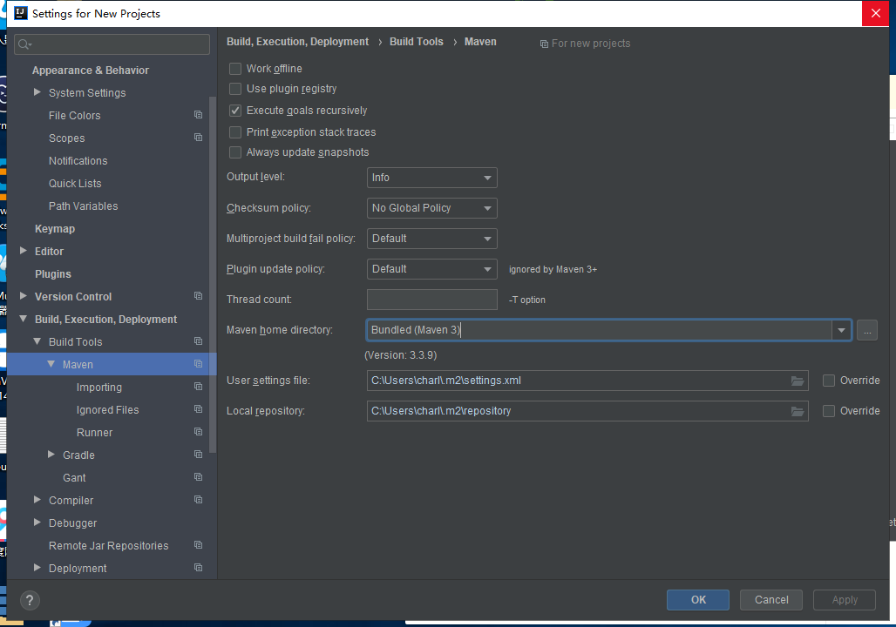

序 Spring Boot 入门
Spring Boot 简介
SpringBoot 来简化Spring应用开发，约定大于配置，去繁从简，just run就能创建一个独立的，产品级别的应用。
简化Spring应用开发的一个框架；
整个Spring技术栈的一个大整合；
J2EE开发的一站式解决方案；
优点
- 快速创建独立运行的Spring项目以及与主流框架集成
- 使用嵌入式Servlet容器，应用无需打成WAR包
- starters自动依赖与版本管理
- 大量的自动配置，简化开发，也可以修改默认值
- 无需配置XML，无代码生成，开箱即用
- 准生产环境的运行时应用监控
- 与云计算的天然集成
微服务
2014, martin fowler
微服务：架构风格
一个应用应该是一组小型服务；可以通过HTTP的方式进行互通。
单体应用： ALL IN ONE;
微服务：每一个功能元素最终都是一个可独立替换和独立升级的软件单元；
环境准备
环境约束
–jdk1.8：Spring Boot 推荐jdk1.7及以上；java version "1.8.0_112"
–maven3.x：maven 3.3以上版本；Apache Maven 3.3.9 MAVEN Download (opens new window)
–IntelliJIDEA2017：IntelliJ IDEA 2017.2.2 x64、STS
–SpringBoot 1.5.9.RELEASE：1.5.9；
统一环境；
MAVEN设置；
给maven 的settings.xml配置文件的profiles标签添加
<profile>
<id>jdk-1.8</id>
<activation>
<activeByDefault>true</activeByDefault>
<jdk>1.8</jdk>
</activation>
<properties>
<maven.compiler.source>1.8</maven.compiler.source>
<maven.compiler.target>1.8</maven.compiler.target>
<maven.compiler.compilerVersion>1.8</maven.compiler.compilerVersion>
</properties>
</profile>
2
3
4
5
6
7
8
9
10
11
12
IDEA设置
整合maven进来；


Spring Boot HelloWorld
一个功能：
浏览器发送hello请求，服务器接受请求并处理，响应Hello World字符串；
创建一个maven工程；（jar）
导入spring boot相关的依赖
编写一个主程序；启动Spring Boot应用
/**
* @SpringBootApplication 来标注一个主程序类，说明这是一个Spring Boot应用
*/
@SpringBootApplication
public class HelloWorldMainApplication {
public static void main(String[] args) {
// Spring应用启动起来
SpringApplication.run(HelloWorldMainApplication.class, args);
}
}
2
3
4
5
6
7
8
9
10
11
12
13
编写相关的Controller、Service
@Controller
public class HelloController {
@ResponseBody
@RequestMapping("/hello")
public String hello(){
return "Hello World";
}
}
2
3
4
5
6
7
8
9
10
运行主程序测试
简化部署
<!-- 这个插件，可以将应用打包成一个可执行的jar包；-->
<build>
<plugins>
<plugin>
<groupId>org.springframework.boot</groupId>
<artifactId>spring-boot-maven-plugin</artifactId>
</plugin>
</plugins>
</build>
2
3
4
5
6
7
8
9
将这个应用打成jar包，直接使用java -jar的命令进行执行；
Hello World 探究
POMW文件
父项目
<parent>
<groupId>org.springframework.boot</groupId>
<artifactId>spring-boot-starter-parent</artifactId>
<version>1.5.9.RELEASE</version>
</parent>
他的父项目是
<parent>
<groupId>org.springframework.boot</groupId>
<artifactId>spring-boot-dependencies</artifactId>
<version>1.5.9.RELEASE</version>
<relativePath>../../spring-boot-dependencies</relativePath>
</parent>
他来真正管理Spring Boot应用里面的所有依赖版本；
2
3
4
5
6
7
8
9
10
11
12
13
14
15
Spring Boot的版本仲裁中心；
以后我们导入依赖默认是不需要写版本；（没有在dependencies里面管理的依赖自然需要声明版本号）
导入的依赖
<dependency>
<groupId>org.springframework.boot</groupId>
<artifactId>spring-boot-starter-web</artifactId>
</dependency>
2
3
4
spring-boot-starter-==web==：
spring-boot-starter:spring-boot场景启动器：帮我们导入了web模块正常运行所依赖的组件；
Spring Boot将所有的功能场景都抽取出来，做成一个个的starters（启动器），只需要在项目里面引入这些starter相关场景的所有依赖都会导入进来。要用什么功能就导入什么场景的启动器
主程序类，主入口类
/**
* @SpringBootApplication 来标注一个主程序类，说明这是一个Spring Boot应用
*/
@SpringBootApplication
public class HelloWorldMainApplication {
public static void main(String[] args) {
// Spring应用启动起来
SpringApplication.run(HelloWorldMainApplication.class,args);
}
}
2
3
4
5
6
7
8
9
10
11
12
13
@SpringBootApplication: Spring Boot应用标注在某个类上说明这个类是SpringBoot的主配置类，SpringBoot就应该运行这个类的main方法来启动SpringBoot应用；
@Target(ElementType.TYPE)
@Retention(RetentionPolicy.RUNTIME)
@Documented
@Inherited
@SpringBootConfiguration
@EnableAutoConfiguration
@ComponentScan(excludeFilters = {
@Filter(type = FilterType.CUSTOM, classes = TypeExcludeFilter.class),
@Filter(type = FilterType.CUSTOM, classes = AutoConfigurationExcludeFilter.class) })
public @interface SpringBootApplication {
2
3
4
5
6
7
8
9
10
@SpringBootConfiguration:Spring Boot的配置类；
标注在某个类上，表示这是一个Spring Boot的配置类；
@Configuration:配置类上来标注这个注解；
配置类 ----- 配置文件；配置类也是容器中的一个组件；@Component
@EnableAutoConfiguration：开启自动配置功能；
以前我们需要配置的东西，Spring Boot帮我们自动配置；@EnableAutoConfiguration告诉SpringBoot开启自动配置功能；这样自动配置才能生效；
@AutoConfigurationPackage
@Import(EnableAutoConfigurationImportSelector.class)
public @interface EnableAutoConfiguration {
2
3
@AutoConfigurationPackage：自动配置包
@Import(AutoConfigurationPackages.Registrar.class)：
Spring的底层注解@Import，给容器中导入一个组件；导入的组件由AutoConfigurationPackages.Registrar.class；
==将主配置类（@SpringBootApplication标注的类）的所在包及下面所有子包里面的所有组件扫描到Spring容器；==
@Import(EnableAutoConfigurationImportSelector.class)；
给容器中导入组件？
EnableAutoConfigurationImportSelector：导入哪些组件的选择器；
将所有需要导入的组件以全类名的方式返回；这些组件就会被添加到容器中；
会给容器中导入非常多的自动配置类（xxxAutoConfiguration）；就是给容器中导入这个场景需要的所有组件，并配置好这些组件；

有了自动配置类，免去了我们手动编写配置注入功能组件等的工作；
SpringFactoriesLoader.loadFactoryNames(EnableAutoConfiguration.class,classLoader)；
==Spring Boot在启动的时候从类路径下的META-INF/spring.factories中获取EnableAutoConfiguration指定的值，将这些值作为自动配置类导入到容器中，自动配置类就生效，帮我们进行自动配置工作；==以前我们需要自己配置的东西，自动配置类都帮我们；
J2EE的整体整合解决方案和自动配置都在spring-boot-autoconfigure-1.5.9.RELEASE.jar；
使用Spring Initializer快速创建Spring Boot项目
IDEA：使用 Spring Initializer快速创建项目
IDE都支持使用Spring的项目创建向导快速创建一个Spring Boot项目；
选择我们需要的模块；向导会联网创建Spring Boot项目；
默认生成的Spring Boot项目；
- 主程序已经生成好了，我们只需要我们自己的逻辑
- resources文件夹中目录结构
- static：保存所有的静态资源； js css images；
- templates：保存所有的模板页面；（Spring Boot默认jar包使用嵌入式的Tomcat，默认不支持JSP页面）；可以使用模板引擎（freemarker、thymeleaf）；
- application.properties：Spring Boot应用的配置文件；可以修改一些默认设置；
STS使用 Spring Starter Project快速创建项目
略